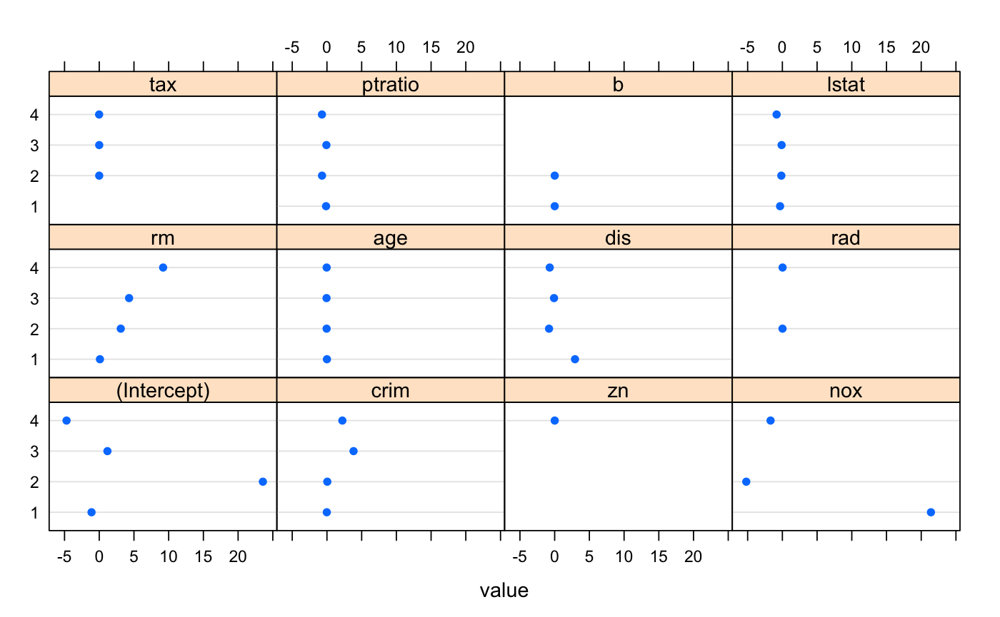
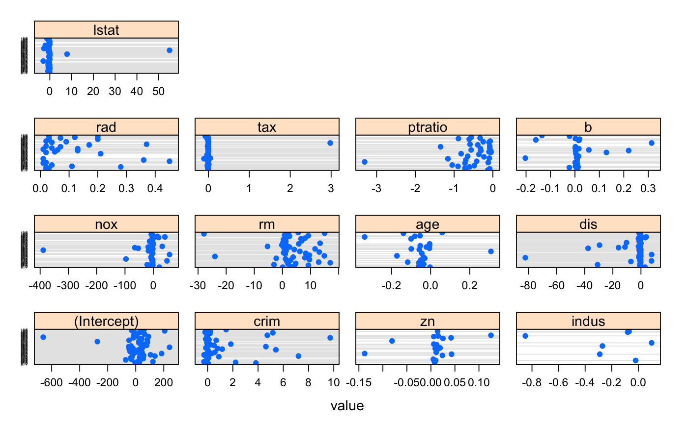

Visualization of Cubist Rules and Equations
Lattice dotplots of the rule conditions or the linear model
coefficients produced by cubist() objects
# S3 method for cubist dotplot(x, data = NULL, what = "splits", committee = NULL, rule = NULL, ...)
Arguments
| x | a |
|---|---|
| data | not currently used (here for lattice compatibility) |
| what | either "splits" or "coefs" |
| committee | which committees to plot |
| rule | which rules to plot |
| … | options to pass to |
Value
a lattice::dotplot() object
Details
For the splits, a panel is created for each predictor. The
x-axis is the range of the predictor scaled to be between zero
and one and the y-axis has a line for each rule (within each
committee). Areas are colored as based on their region. For
example, if one rule has var1 < 10, the linear for this rule
would be colored. If another rule had the complementary region
of var1 <= 10, it would be on another line and shaded a
different color.
For the coefficient plot, another dotplot is made. The layout is the same except the the x-axis is in the original units and has a dot if the rule used that variable in a linear model.
References
Quinlan. Learning with continuous classes. Proceedings of the 5th Australian Joint Conference On Artificial Intelligence (1992) pp. 343-348
Quinlan. Combining instance-based and model-based learning. Proceedings of the Tenth International Conference on Machine Learning (1993) pp. 236-243
Quinlan. C4.5: Programs For Machine Learning (1993) Morgan Kaufmann Publishers Inc. San Francisco, CA http://rulequest.com/cubist-info.html
See also
cubist(), cubistControl(),
predict.cubist(), summary.cubist(),
predict.cubist(), lattice::dotplot()
Examples
library(mlbench) data(BostonHousing) ## 1 committee and no instance-based correction, so just an M5 fit: mod1 <- cubist(x = BostonHousing[, -14], y = BostonHousing$medv) dotplot(mod1, what = "splits")dotplot(mod1, what = "coefs")## Now with 10 committees mod2 <- cubist(x = BostonHousing[, -14], y = BostonHousing$medv, committees = 10) dotplot(mod2, scales = list(y = list(cex = .25)))dotplot(mod2, what = "coefs", between = list(x = 1, y = 1), scales = list(x = list(relation = "free"), y = list(cex = .25)))